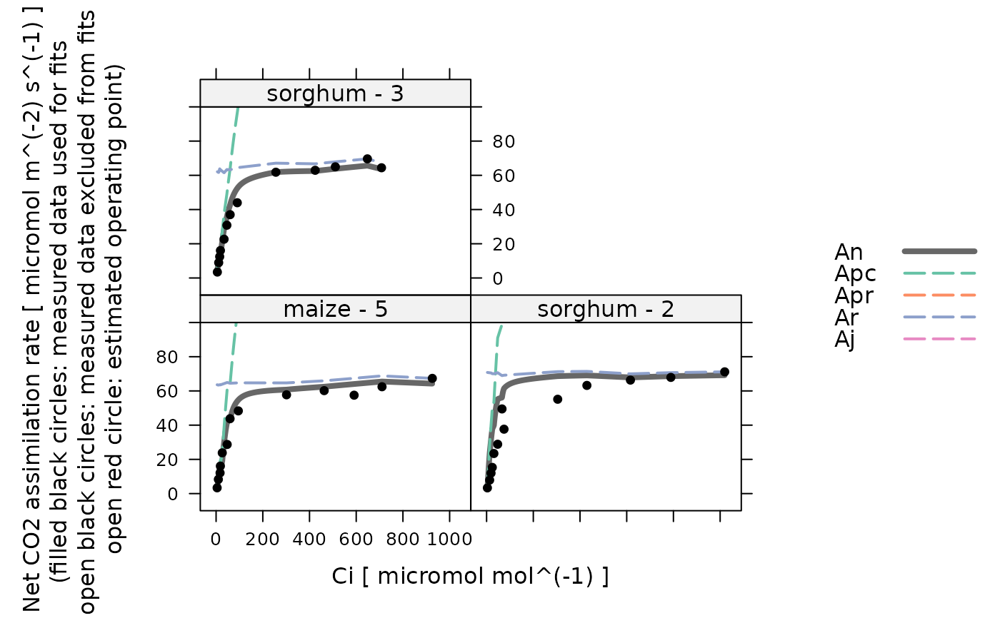

Make an initial guess of C4 photosynthesis parameter values for one curve
initial_guess_c4_aci.RdCreates a function that makes an initial guess of C4 photosynthesis model
parameter values for one curve. The returned function meets the requirements
for the initial_guess_fun input argument of fit_c4_aci.
Values estimated by this guessing function should be considered inaccurate, and should always be improved upon by an optimizer.
Usage
initial_guess_c4_aci(
pcm_threshold_rm = 100,
gbs = 0.003,
Rm_frac = 0.5,
a_column_name = 'A',
pcm_column_name = 'PCm',
kp_column_name = 'Kp',
rd_norm_column_name = 'Rd_norm',
vcmax_norm_column_name = 'Vcmax_norm',
vpmax_norm_column_name = 'Vpmax_norm'
)Arguments
- pcm_threshold_rm
An upper cutoff value for the partial pressure of CO2 in the mesophyll (in
microbar) to be used when estimatingRm.- gbs
The bundle sheath conductance to CO2 in
mol m^(-2) s^(-1) bar^(-1).- Rm_frac
The fraction of the total mitochondrial respiration that occurs in the mesophyll.
- a_column_name
The name of the column in
licor_exdfthat contains the net assimilation inmicromol m^(-2) s^(-1).- pcm_column_name
The name of the column in
exdf_objthat contains the partial pressure of CO2 in the mesophyll, expressed inmicrobar.- kp_column_name
The name of the column in
exdf_objthat contains the Michaelis-Menten constant for PEP carboxylase carboxylation inmicrobar.- rd_norm_column_name
The name of the column in
exdf_objthat contains the normalizedRdvalues (with units ofnormalized to Rd at 25 degrees C).- vcmax_norm_column_name
The name of the column in
exdf_objthat contains the normalizedVcmaxvalues (with units ofnormalized to Vcmax at 25 degrees C).- vpmax_norm_column_name
The name of the column in
exdf_objthat contains the normalizedVpmaxvalues (with units ofnormalized to Vpmax at 25 degrees C).
Details
Here we estimate values of Rd, Vcmax, Vpmax, and
Vpr from a measured C4 CO2 response curve. For more information about
these parameters, see the documentation for
calculate_c4_assimilation. To estimate these parameter values,
we use several equations from S. von Caemmerer, "Biochemical Models of Leaf
Photosynthesis" (CSIRO Publishing, 2000) [doi:10.1071/9780643103405
]. Any
equation numbers referenced below are from this book.
Estimating Rd: An estimate for
Rmcan be obtained using Equation 4.26, which applies for low values ofPCm. In this situation,PCm + Kpcan be approximated byKp, and Equation 4.26 simplifies to a linear relationship between the net assimilationAnandPCm:An = (gbs + Vpmax / kP) * PCm - Rm. So, to estimateRm, we make a linear fit ofAnvs.PCmin the lowPCmrange where this equation is expected to be valid. ThenRmis given by the negative of the intercept from the fit. In the C4 assimilation model, we assume thatRm = Rm_frac * Rd, so we can also estimateRd = Rm / Rm_fracfrom this value.Estimating Vpmax: An estimate for
Vpmaxcan also be obtained from Equation 4.26. In this case, we simply solve the equation forVpmaxand use it to calculate a value ofVpmaxat each point in the curve from the measured values ofAnandPCm, the input value ofgbs, and the value ofRmestimated above. In the PEP-carboxylation-limited range, the estimated values ofVpmaxshould be reasonable. In other parts of the curve, the assimilation rate is limited by other factors, soAnwill be smaller than the PEP-carboxylation-limited values, causing the estimated values ofVpmaxto be smaller. So, to make an overall estimate, we choose the largest estimatedVpmaxvalue.Estimating Vcmax: An estimate for
Vcmaxcan be obtained by solvingAn = Vcmax - RdforVcmax, similar to the method used to estimateVpmax.Estimating Vpr: An estimate for
Vprcan be obtained by solvingAn = Vpr + gbs * PCm - RmforVpr, similar to the method used to estimateVpmax.
Note that a key assumption underlying this approach is that the net
assimilation can be reasonably approximated by An = min(Apc, Apr, Ar)
(Equation 4.25). While this approximation seems to work well for low values of
PCm, it tends to deviate significantly from the more accurate version
(Equation 4.21) at higher values of PCm, predicting values that are
noticably smaller. Thus, the values of Vcmax and Vpr estimated
using this procedure are unlikely to be accurate. This is not a problem;
instead it simply highlights the importance of improving this initial guess
using an optimizer, which can be accomplished via fit_c4_aci.
Value
A function with one input argument rc_exdf, which should be an
exdf object representing one C4 CO2 response curve. The return value of
this function will be a numeric vector with four elements, representing the
values of Rd, Vcmax, Vpmax, and Vpr (in that
order) at 25 degrees C.
Examples
# Read an example Licor file included in the PhotoGEA package
licor_file <- read_gasex_file(
system.file('extdata', 'c4_aci_1.xlsx', package = 'PhotoGEA', mustWork = TRUE)
)
# Define a new column that uniquely identifies each curve
licor_file[, 'species_plot'] <-
paste(licor_file[, 'species'], '-', licor_file[, 'plot'] )
# Organize the data
licor_file <- organize_response_curve_data(
licor_file,
'species_plot',
c(9, 10, 16),
'CO2_r_sp'
)
# Calculate temperature-dependent values of C4 photosynthetic parameters
licor_file <- calculate_arrhenius(licor_file, c4_arrhenius_von_caemmerer)
# Calculate the total pressure in the Licor chamber
licor_file <- calculate_total_pressure(licor_file)
# Calculate PCm
licor_file <- apply_gm(licor_file, 'C4')
# Create the guessing function
guessing_func <- initial_guess_c4_aci()
# Apply it and see the initial guesses for each curve
str(by(licor_file, licor_file[, 'species_plot'], guessing_func))
#> List of 3
#> $ maize - 5 : num [1:4] -12 26.5 125.4 54.8
#> $ sorghum - 2: num [1:4] -6.81 35.79 145.14 62.94
#> $ sorghum - 3: num [1:4] -10.8 27.4 86.1 58.6
# Calculate simulated A-Ci curves based on the guesses and compare them to the
# actual data
calculated_aci <- do.call(rbind, by(
licor_file,
licor_file[, 'species_plot'],
function(x) {
param <- guessing_func(x)
calculate_c4_assimilation(x, param[1], param[2], param[3], param[4])
}
))
lattice::xyplot(
Apr + Apc + Ar + An + A ~ PCm | species_plot,
data = cbind(licor_file, calculated_aci)$main_data,
type = 'b',
auto = TRUE,
grid = TRUE
)
